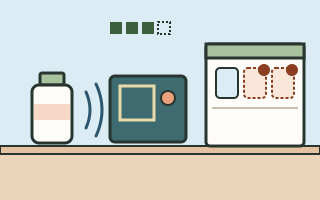
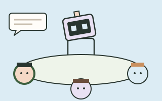

Debug Playground
A few tiny systems need a little help.
Want to debug them with me? Three small challenges inspired by what I build. Each one starts with a flawed rule: change the rule, run it again, and watch what changes.
Honest label: these are simplified demonstrations inspired by my projects. They are not reconstructions of real bugs from those projects, and none of them run my actual project code.
-

Bug 1 · inspired by IoT Inventory Tracker
“The scanner has déjà vu.”
One object keeps showing up on the inventory shelf. Teach the reader to ignore repeats.
Not fixed yet
-
Bug 2 · inspired by TrackTheTrek
“The trail journal forgot the hike.”
Every hike vanishes when the journal closes. Give it a memory that lasts.
Not fixed yet
-

Bug 3 · inspired by HATRIC
“Everyone deserves a turn.”
A trivia robot only ever talks to Seat 1. Help it notice who hasn’t spoken.
Not fixed yet
Rather see the real work? Go to my projects or open my resume (PDF, opens in a new tab).